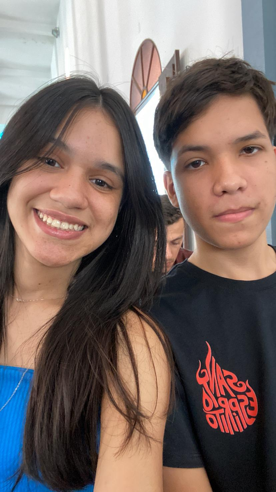
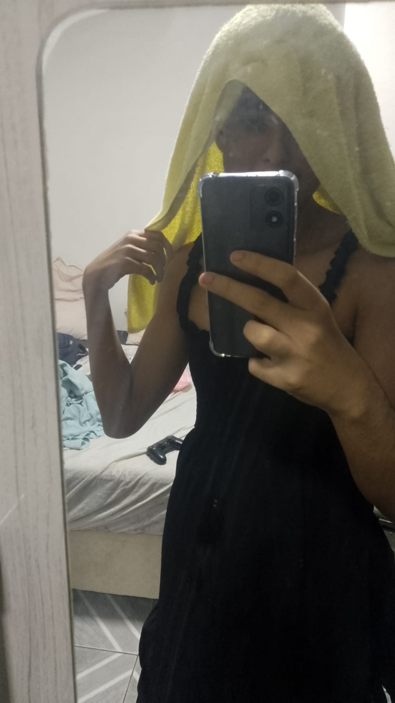

🫡 Informações dos Desenvolvedores 🫡

Andrei Eric
Andrei é um desenvolvedor apaixonado por tecnologia. Gosta de programar e um grande amante de games. Sua meta acadêmica é ser doutor em Ciências da Computação, ou em IA.

Neurivan
Neurivan é um entusiasta de tecnologia e inovação. Torcedor fanático do Bayern de Munique. Gosta de aprender novas linguagens de programação. Sua visão de futuro é trabalhar com inteligência artificial.

Lucas Misael
Misael é um desenvolvedor focado em front-end. Gosta de criar interfaces bonitas e funcionais. Sua visão de futuro é se especializar em UX/UI design.